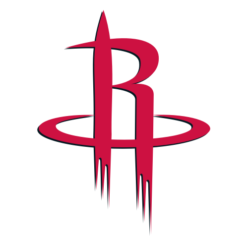

Los Houston Rockets (en español, Cohetes de Houston) es un equipo profesional de baloncesto de los Estados Unidos con sede en Houston, Texas. Compiten en la División Suroeste de la Conferencia Oeste de la National Basketball Association (NBA) y disputan sus partidos como locales en el Toyota Center.
Los Rockets lucharon duramente durante la primera mitad de la temporada 1994-95. A mitad de campaña, consiguieron a Clyde Drexler de Portland a cambio de Otis Thorpe. Drexler ya había coincidido antes con Olajuwon en la Universidad de Houston. Los Rockets entraron en playoffs como sextos del Oeste. En ellos, batieron a Utah Jazz (60-22 en la liga regular) en primera ronda, Phoenix Suns (59-23) en Semifinales, y San Antonio Spurs (62-20) en las Finales de Conferencia. En el quinto partido de la serie ante los Spurs, se celebró una ceremonia previa al mismo en el que se entregó el MVP de la temporada a David Robinson.
El equipo fue fundado en 1967 en la ciudad californiana de San Diego con el nombre de San Diego Rockets antes de trasladarse a Houston tres años después
 Indice
Indice